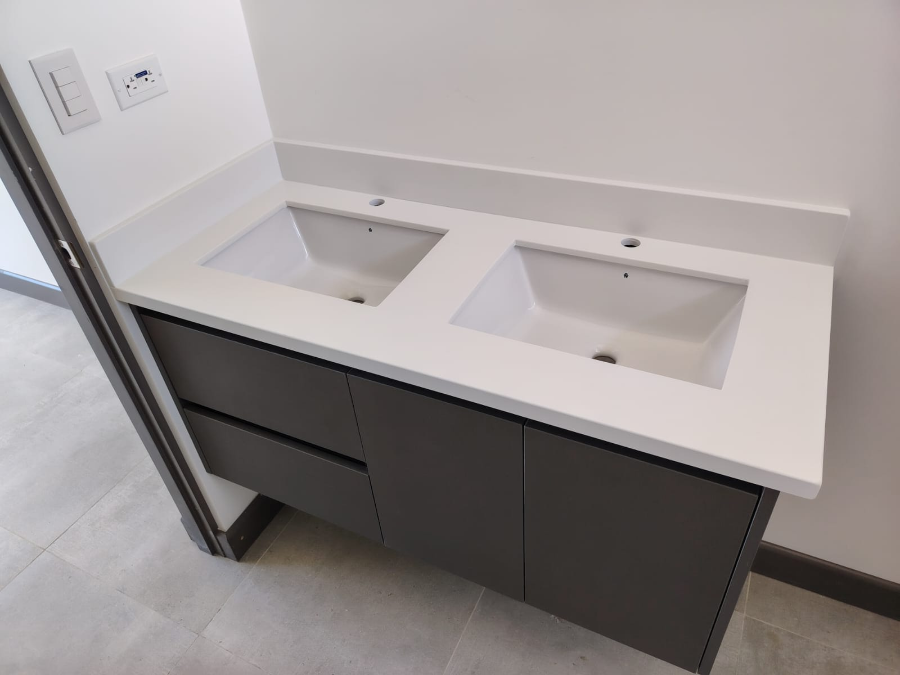

MÁRMOL
Vetas nobles para espacios emblemáticos.
Mármol con carácter clásico y líneas arquitectónicas precisas, diseñado para proyectos donde la elegancia es parte del lenguaje.
Superficies ideales para baños, encimeras y revestimientos con un legado escultórico.
Muestrario de Colores

Proyectos Terminados

Baño spa

Encimera blanca

Panel mural

Lavabo sobrepuesto

Fachada interior

Barras auxiliares

Revestimiento de pared

Recepción minimal

Escalera

Encimera de mármol

Isla de cocina
Lavabo integrado
Top de baño
Placa escultural
Barra de desayuno